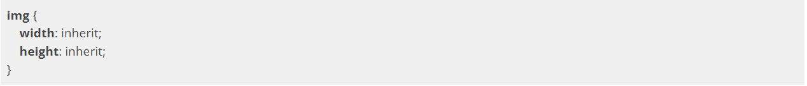

Vamos com o exemplo a seguir:

No código acima estamos aplicando uma largura de
300px para todas as tags <img>. Mas e se nós só quisermos aplicar essa largura apenas para as imagens que estão nas figuras? É aí que entra o seletor mais específico:
Agora estamos aplicando a largura de 300px apenas às imagens que são filhas de uma tag
<figure>.
Outra forma de selecionar elementos mais específicos é usando o atributo id="" nos elementos que queremos estilizar e depois fazer a chamada de seletor de id:
Só que não é recomendado o uso de
id para a estilização de elementos já que a idéia do atributo é para fazer uma referência única na página como fizemos na parte dos links. Quando queremos estilizar elementos específicos é melhor utilizar o atributo class="". O comportamento no CSS será idêntico ao do atributo id="", mas class foi feito para ser usado no CSS e no JavaScript.
Arrumando o exemplo anterior, usando classes:
Grau de especificidade de um seletor
Existe uma coisa muito importante no CSS que precisamos tomar cuidado é o grau de especificidade de um seletor. Isto é, a prioridade de interpretação de um seletor pelo navegador. Para entender estas regras de especificidade de um selector, ao criarmos um seletor de tag a sua pontuação se torna 1. Quando usamos um seletor de classe sua pontuação se torna 10. Quando usamos um seletor de id sua pontuação se torna 100. Ao fim, o navegador soma a pontuação dos seletores aplicados à um elemento, e as propriedades com o seletor de maior pontuação são as que valem.
No exemplo acima o parágrafo vai ficar com a cor rosa porque o seletor que tem a cor rosa é o seletor de maior pontuação.
Quando elementos possuem a mesma pontuação quem prevalece é a propriedade do último seletor:
No exemplo acima a cor do parágrafo será vermelha.
Podemos também somar os pontos para deixar nosso seletor mais forte:
No exemplo acima nós deixamos nosso seletor mais específico para os
<p> que estão dentro de uma tag <body>, portanto a cor do parágrafo será marrom.
Herança
A cascata do CSS, significa justamente a possibilidade de elementos filhos herdarem características de estilização de elementos superiores, estas definidas por suas propriedades, que podem ou não passar aos seus descendentes seus valores.
Vamos ver o exemplo de código a seguir:
Vamos mudar a família da fonte de toda a página. Uma maneira que podemos fazer é selecionar todas as tags que contém text (
<p>, <a> e <figcaption>) e colocar a família de fonte que queremos:
Mas isso dá muito trabalho e estamos repetindo código. Ao invés de colocar essa propriedade em cada um dos elementos textuais da nossa página, podemos colocar no elemento superior a estas tags, neste caso é o elemento
<body>.
No exemplo acima todos os elementos filhos da tag
<body> vão receber a propriedade font-family: e isso é o que nós chamamos de herança. Herança acontece quando elementos herdam propriedades dos elementos acima deles (elementos pai).
Para saber mais: o valor inherit
Imagine que temos a seguinte divisão com uma imagem:

Queremos que a imagem preencha todo o espaço da
<div>, mas as propriedades width e height não são aplicadas em cascata, sendo assim, somos obrigados a definir o tamanho da imagem manualmente:
Esta não é uma solução sustentável, porque, caso alterarmos o tamanho da
<div>, teremos que lembrar de alterar também o tamanho da imagem. Uma forma de resolver este problema é utilizando o valor inherit para as propriedades width e height da imagem:

O valor
inherit indica para o elemento filho que ele deve utilizar o mesmo valor presente no elemento pai, sendo assim, toda vez que o tamanho do elemento pai for alterado, automaticamente o elemento filho herdará o novo valor, facilitando assim, a manutenção do código.
Lembre-se de que o
inherit também afeta propriedades que não são aplicadas em cascata.